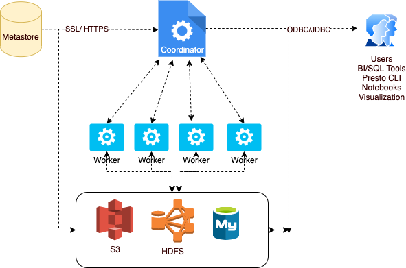
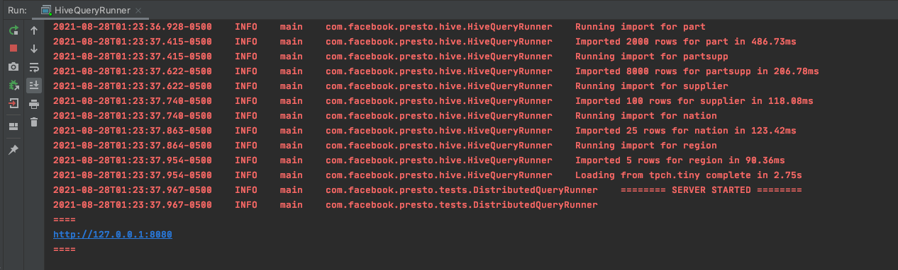
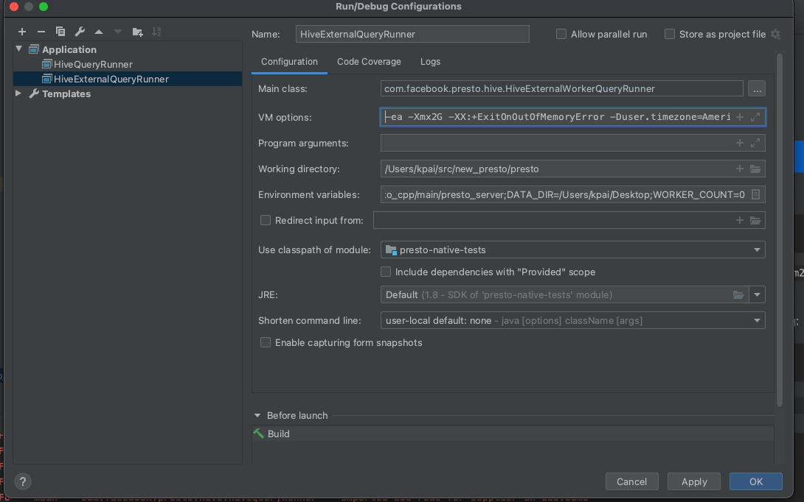
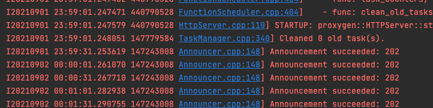

Presto Native Execution - Getting Started¶
Prerequisites¶
Git & Github¶
1. Signup for a GitHub account if you don’t have one already. 3. Set up public key authentication (using ssh keys) for GitHub, if you haven’t done so already 4. Make sure you have git installed and works (Run git —version to confirm)
Java¶
We will be using JDK8 for Presto.
Install JDK8 from oracle.com
Install Open JDK 11
Add this line to your .bash_profile or .zshenv:
export JAVA_HOME=$(/usr/libexec/java_home -v 1.8.0)
Source Code¶
Ensure you have access to the following repositories:
Presto¶
It is assumed that the reader has some familiarity with Presto, if not please readup on basic terms and architecture here.
We will setup Java based Presto co-ordinator and a C++ based Presto worker using the Velox library.
Setup Presto¶
Fork prestodb/presto repository by clicking on the “Fork” button.
Clone the repo to your laptop.
git clone https://github.com/<YOUR_GITHUB_USERNAME>/presto.git
Then ensure you set the right upstream.
git remote add upstream git@github.com:prestodb/presto.git
Setup Maven
If you are on Windows or Linux, look up in the maven docs on how to get maven running on your platform. If you are on a Mac, use Homebrew
brew install maven
mvn --version # Should be 3.5.0
Build Presto
Go to presto directory and build:
cd presto
./mvnw clean install -DskipTests
Install IntelliJ
Download and install IntellliJ You can also use any other IDE however the instructions in this document will only concern IntelliJ.
Setup IntelliJ¶
Open IntelliJ and use ‘Open Existing’ to open the presto project
- Create run configuration for HiveQueryRunner.
Goto “Run -> Edit Configurations”, click to add new Application
Main class:
com.facebook.presto.hive.HiveQueryRunnerVM options:
-ea -Xmx2G -XX:+ExitOnOutOfMemoryError -Duser.timezone=America/Bahia_Banderas -Dhive.security=legacyWorking directory:
$MODULE_DIR$Use classpath of module:
presto-hive
Upon running this you should see something like the following:
Setup presto_cpp¶
Clone presto_cpp GitHub repo from here
Ensure that Velox is checked out as a submodule for presto_cpp
This might require you to create a Personal Access Token
Then run command below and enter your Personal Access Token or password
git submodule update --init --recursive
# Let's ensure we can build presto_cpp
$cd ../presto_cpp
$./scripts/setup-macos.sh
$ make debug
Load the project in CLion and build it. Make sure you check the option for CMake project. You should see a build directory like this :
Setup Velox¶
Note: For the purpose of this document, we will just use the submodule inside presto_cpp. Typically though you would checkout Velox independently and carry your work there.
Run the following commands if you are setting up on a Mac.
$ cd velox
$ ./scripts/setup-macos.sh
Also add the following in your ~/.profile
export PATH=$HOME/bin:$HOME/Library/Python/3.7/bin:$PATH
Now lets build the project
$ make debug
#[Optional] Run unit tests
$ make unittest
End to End Run¶
Let us now try and make a minor modification in Velox and call it from Presto.
Make Changes and Build¶
Lets make some simple change, Consider this set of changes here. Add a similar function, say
bitwise_xor.Make your changes inside the Velox subdirectory of
presto_cpp.Make sure you can build your changes and that all the unit tests pass.
Add presto_cpp to Presto¶
We will add presto_cpp as a module to Presto.
Click File > New > Module From Existing Sources .. > , Then go to
presto_cpp/java/presto-native-tests/pom.xml
2. Now lets create the configuration for HiveExternalQueryRunner. We will need three env variables for this purpose, so copy the following below and replace the text in bold with your specific text.
Env Variables: PRESTO_SERVER=<YOUR_PATH_TO_PRESTO_CPP>/cmake-build-debug/presto_cpp/main/presto_server;DATA_DIR=/Users/<YOUR_USER_NAME>/Desktop;WORKER_COUNT=0
VM Options:
-ea -Xmx2G -XX:+ExitOnOutOfMemoryError -Duser.timezone=America/Bahia_Banderas -Dhive.security=legacy
Your run configuration should look something like below :
- NOTE:
WORKER_COUNTis the number of workers to be launched along with the coordinator. In this case we put 0 as we want to externally launch our own CPP worker from CLion.Use classpath of module: presto-native-tests
Launch the HiveExternalQueryRunner.
Note discovery URI. Something like
http://127.0.0.1:54557. Use the last discovery URI in the InteliJ logs
Update presto_cpp configuration:
Use discovery URI from the logs above and update the config.properties
Now create a run configuration for prestoserver like below:
Note the program arguments are as below:
--logtostderr=1 --v=1 --etc_dir=/Users/<PATH_TO_YOUR>/presto_cpp
Then start the presto_server executable. If all goes well you should see the server connect to the coordinator and see logs like so :
Run Presto CLI:
$ cd presto/presto-cli/target # Java presto repo
$ java -jar presto-cli-0.257-SNAPSHOT-executable.jar --catalog hive --schema tpch
Note that 0.257 may change, pick the one exists in this directory You should be able to connect and run a query from the command line now.